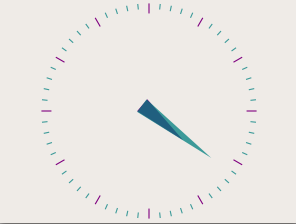

模拟时钟示例
Analog Clock示例展示了如何绘制自定义Widgets的内容。

模拟时钟示例的屏幕截图
这个例子还演示了如何使用QPainter的转换和缩放功能来更轻松地绘制自定义Widgets。
AnalogClock类定义
该类提供了一个带有时针和分针的时钟Widgets，每隔几秒自动更新一次。我们子类化QWidget并重新实现标准的paintEvent（）函数来绘制钟面：
class AnalogClock : public QWidget { Q_OBJECT public: AnalogClock(QWidget *parent = nullptr); protected: void paintEvent(QPaintEvent *event) override; };
AnalogClock类实现
AnalogClock::AnalogClock(QWidget *parent) : QWidget(parent) { QTimer *timer = new QTimer(this); connect(timer, &QTimer::timeout, this, QOverload<>::of(&AnalogClock::update)); timer->start(1000); setWindowTitle(tr("Analog Clock")); resize(200, 200); }
当Widgets被构造时，我们设置一个一秒计时器来跟踪当前时间，并将其连接到标准的update（）插槽，以便在计时器发出timeout（）信号时更新时钟面。
最后，我们调整Widgets的大小，使其以合理的大小显示。
void AnalogClock::paintEvent(QPaintEvent *) { static const QPoint hourHand[3] = { QPoint(7, 8), QPoint(-7, 8), QPoint(0, -40) }; static const QPoint minuteHand[3] = { QPoint(7, 8), QPoint(-7, 8), QPoint(0, -70) }; QColor hourColor(127, 0, 127); QColor minuteColor(0, 127, 127, 191); int side = qMin(width(), height()); QTime time = QTime::currentTime();
每当Widgets的内容需要更新时，就会调用该函数。当Widgets第一次显示时，以及当它被覆盖然后暴露时，都会发生这种情况，但是当Widgets的update（）插槽被调用时，也会执行这种情况。由于我们将计时器的timeout（）信号连接到这个插槽，因此它将至少每五秒被调用一次。
在设置画家并绘制时钟之前，我们首先定义两个QPoint列表和两个QColors，它们将用于时针和分针。分针的alpha分量为191，这意味着它有75%的不透明。
我们还确定了Widgets最短边的长度，这样我们就可以在Widgets内安装时钟面。在开始绘制之前确定当前时间也很有用。
QPainter painter(this); painter.setRenderHint(QPainter::Antialiasing); painter.translate(width() / 2, height() / 2); painter.scale(side / 200.0, side / 200.0);
自定义Widgets的内容是用QPainter绘制的。绘制器可用于在任何QPaintDevice上绘制，但它们通常与Widgets一起使用，因此我们将Widgets实例传递给绘制器的构造函数。
我们使用QPainter：：抗锯齿调用QPainter：：setRenderHint()来打开抗锯齿。这使得对角线的绘制更加流畅。
平移将原点移动到Widgets的中心，缩放操作确保缩放以下绘制操作以适应Widgets。我们使用一个比例因子，让我们使用介于-100和100之间的x和y坐标，从而确保这些坐标位于Widgets最短的边的长度内。
为了使代码更简单，我们将绘制一个固定大小的钟面，该钟面将被定位和缩放，以使其位于Widgets的中心。
绘制程序负责处理绘制事件期间所做的所有变换，并确保所有内容都被正确绘制。让画师处理转换通常比仅仅为了绘制定制Widgets的内容而执行手动计算要容易得多。

我们首先绘制时针，使用一个公式将坐标系逆时针旋转由当前小时和分钟确定的度数。这意味着指针将显示为顺时针旋转所需的量。
painter.setPen(Qt::NoPen); painter.setBrush(hourColor);
我们将笔设置为Qt：：NoPen，因为我们不想要任何轮廓，并且我们使用具有适合显示小时的颜色的实心画笔。填充多边形和其他几何形状时使用画笔。
painter.save(); painter.rotate(30.0 * ((time.hour() + time.minute() / 60.0))); painter.drawConvexPolygon(hourHand, 3); painter.restore();
我们保存并恢复旋转前后的变换矩阵，因为我们希望放置分针，而不必考虑任何先前的旋转。
painter.setPen(hourColor); for (int i = 0; i < 12; ++i) { painter.drawLine(88, 0, 96, 0); painter.rotate(30.0); }
我们在时钟的边缘画上每小时的记号。我们绘制每个标记，然后旋转坐标系，以便画家为下一个标记做好准备。
painter.setPen(Qt::NoPen); painter.setBrush(minuteColor); painter.save(); painter.rotate(6.0 * (time.minute() + time.second() / 60.0)); painter.drawConvexPolygon(minuteHand, 3); painter.restore();
分针的旋转方式与时针相似。
painter.setPen(minuteColor); for (int j = 0; j < 60; ++j) { if ((j % 5) != 0) painter.drawLine(92, 0, 96, 0); painter.rotate(6.0); } }
同样，我们在时钟的边缘绘制标记，但这一次是表示分钟。我们跳过5的倍数，以避免在小时标记上绘制分钟标记。